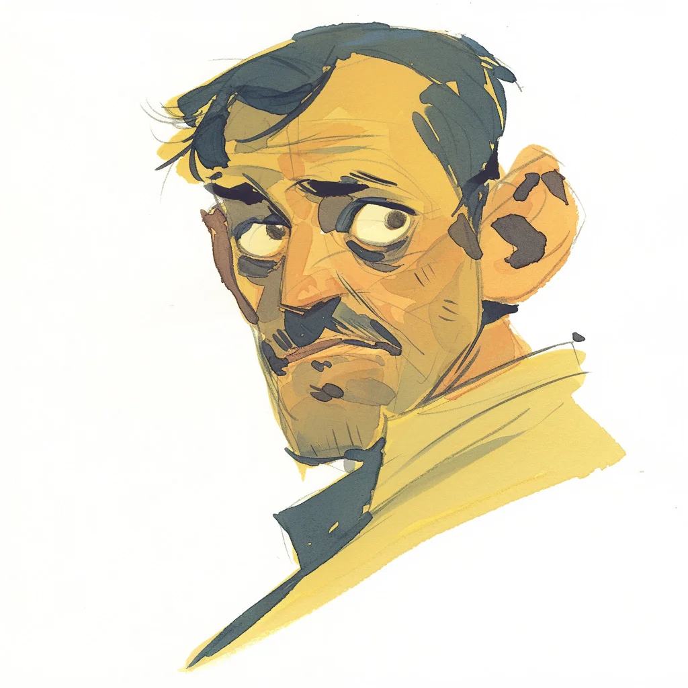

마크 말볼리오는 사촌의 결혼식에서 그것을 처음 맡았다—샤넬 넘버 5와 무언가 썩은 냄새가 섞인. 할머니의 향수였다. 할머니는 12년 전에 돌아가셨다.
[Marc Malvolio first smelled it at his cousin’s wedding—Chanel No. 5 mixed with something rotten. His grandmother’s perfume. She’d been dead for twelve years.]
그는 그 냄새를 따라 얼굴이 붉어지고 땀을 흘리는 필립 삼촌에게 도달했다. 그 냄새는 그림자처럼 삼촌에게 달라붙어 있었다. 사흘 후: 동맥류.
[He followed the scent to Uncle Philip, red-faced and sweating. The smell clung to him like a shadow. Three days later: aneurysm.]
마크는 아무에게도 말하지 않았다. 숫자는 믿을 수 있었다. 냄새는 그렇지 않았다.
[Marc told no one. Numbers were reliable. Smells were not.]
하지만 그것은 다시 일어났다. 은행 출납원. 바리스타. 매번 그 냄새는 더 강해져서 그의 눈물을 흘리게 하고 위를 조이게 했다.
[But it happened again. The bank teller. The barista. Each time, the smell intensified, making his eyes water and stomach clench.]
그는 자신의 섬뜩한 장부를 확인하기 위해 장례식에 참석하기 시작했다. 세 번째 장례식에서, 그는 자신을 지켜보는 한 여자를 발견했다.
[He began attending funerals to verify his macabre ledger. At the third one, he noticed a woman watching him.]
“당신은 너무 많은 것을 본 사람 같은 표정을 하고 있네요,” 그녀는 며칠 후 그의 커피숍에서 말했다.
[“You have the look of someone who’s seen too much,” she said days later at his coffee shop.]
그녀의 명함에는 이렇게 적혀 있었다: “델라일라 H., 장의사. 2018년부터 장례식에 ‘재미'를 더하는 사람.”
[Her card read: “Delilah H., Mortician. Putting the 'fun’ in funeral since 2018.”]
“무슨 말씀인지 모르겠네요,” 마크가 말했다.
[“I don’t know what you’re talking about,” Marc said.]
“내가 당신이 고인을 알지도 못하면서 내 장례식에 세 번이나 왔다는 것을 모르는 것처럼 말이죠.”
[“Just as I don’t know that you’ve been to three of my services without knowing the deceased.”]
그녀는 애버내시 부인의 장례식에서 다시 나타났다. 마크는 약국에서 그녀에게서 죽음의 냄새를 맡았었다.
[She appeared again at Mrs. Abernathy’s funeral. Marc had smelled death on her at the pharmacy.]
“당신의 취미에 대해 이야기할 필요가 있어요,” 델라일라가 속삭였다.
[“We need to talk about your hobby,” Delilah whispered.]
커피를 마시며, 마크는 모든 것을 고백했다.
[Over coffee, Marc confessed everything.]
“그러니까 당신은 죽음의 냄새를 맡는군요,” 델라일라가 요약했다. “죽음의 신을 위한 탄광 속 카나리아 같은 거네요.”
[“So you smell death,” Delilah summarized. “Like a canary in a coal mine for the Grim Reaper.”]
“할머니의 향수 냄새예요,” 마크가 말했다. “그 냄새를 맡으면, 목이 조여오고 관자놀이가 욱신거려요.”
[“It’s my grandmother’s perfume,” Marc said. “When I smell it, my throat closes up and my temples throb.”]
“이 능력으로 뭘 해야 한다고 생각해요?” 그녀가 물었다.
[“What are you supposed to do with this ability?” she asked.]
“모르겠어요.”
[“I don’t know.”]
“자기 자신에게서 그 냄새를 맡은 적은 있나요?”
[“Have you ever smelled it on yourself?”]
“아니요.”
[“No.”]
“저는 어때요?”
[“What about me?”]
마크는 숨을 들이마셨다. 커피와 방부제 냄새 외에는 아무것도 없었다.
[Marc inhaled. Nothing but coffee and antiseptic.]
“왜 내 섬뜩한 재능에 그렇게 관심이 많으세요?” 마크가 물었다.
[“Why are you so interested in my morbid talent?” Marc asked.]
“저는 평생 죽음에 둘러싸여 살았지만 그것을 이해한 적은 없어요. 당신은 제 대차대조표에 다른 관점을 제공해주는 사람이에요.”
[“I’ve spent my life surrounded by death but never understood it. You’re a different perspective in my balance sheet.”]
그들은 특이한 파트너십을 발전시켰다. 그는 표시된 사람들을 식별했고, 그녀는 그들의 도착을 준비했다. 섬뜩한 회계 작업이었다.
[They developed an unusual partnership. He identified the marked; she prepared for their arrival. Morbid accounting.]
그러던 어느 날 아침, 마크는 자신의 침실에서 압도적인 냄새를 맡으며 깨어났다. 그는 공포에 질려 델라일라에게 전화했다.
[Then one morning, Marc woke to the overwhelming scent in his bedroom. He called Delilah in panic.]
“당신이 아닐 수도 있어요,” 그녀가 제안했다.
[“Maybe it’s not you,” she suggested.]
옷장에서 마크는 할머니의 잊혀진 모피 코트를 발견했다. 그 향수는 독성 구름처럼 코트에서 뿜어져 나왔고, 어린 시절처럼 그의 위장을 뒤틀리게 했다.
[In his closet, Marc found his grandmother’s forgotten fur coat. The perfume emanated from it like a toxic cloud, making his stomach lurch just as it had when he was a child.]
델라일라가 도착했을 때, 마크는 히스테리컬하게 웃고 있었다.
[When Delilah arrived, Marc was laughing hysterically.]
“할머니예요,” 그가 숨을 헐떡이며 말했다. “할머니가 저를 데리러 오는 줄 알았어요. 하지만 그냥 제가 한 번도 입지 않은 이 코트였을 뿐이에요.”
[“My grandmother,” he gasped. “I thought she was coming for me. But it’s just this coat I never wear.”]
“가족이란,” 델라일라가 말했다. “우리 모두를 죽음으로 이끄는 존재죠.”
[“Family,” Delilah said. “They’re the death of us all.”]
마크는 그날 오후 코트를 불태웠고, 할머니의 영향력이 연기 속으로 말려 올라가는 것을 지켜보았다. 그 냄새는 결국 사라졌다.
[Marc burned the coat that afternoon, watching his grandmother’s influence curl into smoke. The smell eventually faded.]
그는 여전히 낯선 사람들에게서 죽음의 냄새를 맡지만, 이제는 사람들로 붐비는 방 건너편에서 델라일라에게 고개를 끄덕인다. 그들의 공유된 비밀은 섬뜩하지만 위안이 되었다. 결국, 인생의 장부에서 죽음은 유일하게 보장된 거래니까.
[He still smells death on strangers, but now he nods at Delilah across crowded rooms, their shared secret a macabre comfort. After all, in the ledger of life, death is the only guaranteed transaction.]